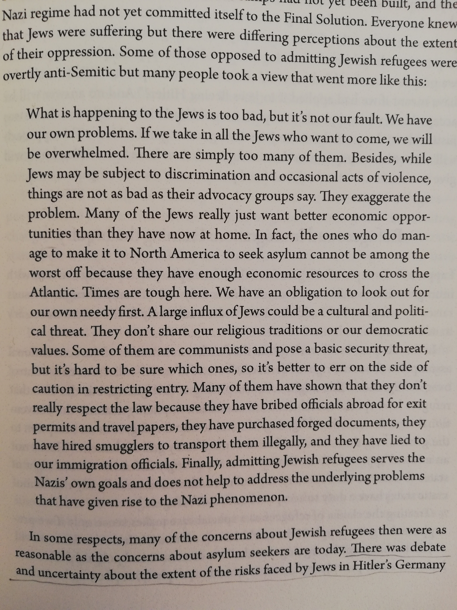

we-cannot-take-them-all
linguistic accents and xenophobia : Preliminary findings in the design of a voice interface
Terhi Marttila, University of Porto
This work was financially supported by: Operation NORTE-08-5369-FSE-000049 co funded by the European Social Fund (FSE) through NORTE 2020 - Programa Operacional Regional do NORTE.

we-cannot-take-them-all
Uma exploração, através da voz, de sentimentos xenofóbicos baseado num texto do Professor Joseph Carens
Joseph Carens - The Ethics of Immigration (2015), p. 193
= mas afinal, foi ratificado pela ONU em 1951/1967 a International Refugee Convention
Liçao No 1 :
1) Ouvir as 10 razões através da voz sintética é cansativo, e por esse motivo, o utilizador não se expõe ao segundo, terceiro, etc. voz.
2) Assim, falhamos na transmissão da mensagem:
3) as justificações para a oposição aos refugiados são iguais em todo o mundo.
Liçao No 2 :
1) Falar em nacionalidades específicas dos refugiados resulta em associações com o que conhecemos através das notícias.
2) Porque talvez já temos uma opinião formada sobre os assuntos, o diálogo torna-se mais difícil.
3) Portanto, falar num nível mais abstrato deixa espaço para reflexão: the others, the foreigners em vez de Jews, Afghans, etc.
Liçao No 3 :
1) A usabilidade é essencial para garantir que uma pessoa saiba como navegar no sistema.
2) "Por favor, verifica que tem som, depois, carrega aqui." == depois de carregar no botão, vai haver qualquer coisa para ouvir.
3) "Vamos ouvir as razões sobre porque é que nos não podemos deixar os todos entrar. Diga, por exemplo: 'I am American'" == Primeiro falei eu, agora é a tua vez.
Liçao No 4 :
1) A vantagem de um sistema baseado na voz deve-se à etiqueta das conversas: primeiro falo eu, depois falas tu, etc.
2) Um interface baseado em botões/clicks possibilita que o utilizador avance para a próxima nacionalidade antes da voz acabar de falar
3) Assim, com este "turn-taking", o utilizador estará mais disposto a prestar atenção ao sistema até o mesmo acabar de falar.
Liçao No 5 :
1) Com a utilização dum sotaque linguístico podemos suscitar a ideia de um país ou de uma nacionalidade de uma forma elegante, sem grande esforço.
2) ... mas suscitar só para quem já conhece aquele sotaque.
3) Para quem não o conhece, vai soar apenas a qualquer coisa genérica em estrangeiro. Mas esta sensação também é útil para efeitos retóricos.
Mas afinal: será que esta obra sucede em promover tolerância? Em expor falhas na lógica xenofóbica?
1) Eu acho que não o faz.
2) Ainda sinto a falta de algumas camadas na retórica.
3) Mesmo assim, as lições até agora recolhidas já são interessantes em termos de desenvolvimento de uma interface de voz.
Future work
1) implementar mais línguas/sotaques, um botão para opt-in de captura de audio..
2) desenvolver uma forma de apresentação numa exposição
3) Pensar criticamente sobre como atingir os objetivos retóricos desta obra.